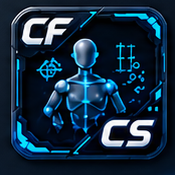

Character Setup
dcc/maya/character/setup_tool/main_window.py —
CFCharacterSetupWindow
(WINDOW_OBJECT_NAME = "CF_CharacterSetupWindow"), launched
from Character > Character Setup. The authoring UI
for this project's own character-aware data model — a lightweight,
tagged data node that other applications (chiefly AnimHub and its
export pipeline) key off of.
Every downstream tool that needs to reason about "which rig is this," "what's its export target," or "what's attached to what" needs a shared, discoverable notion of a character - without one, every application ends up inventing its own ad hoc way to find and identify rigs, and none of them agree with each other.
Represent a character as data on a native Maya
node - real typed attributes (enums, message connections, a
compound multi-attribute for sockets) applied generically from one
declarative schema table, not a custom node type and not a
hand-written cmds.addAttr call per field. A stable UUID,
not a node name, is the join key every other application uses to
reference a character, so a rename never breaks a downstream
reference.
Any application can discover every character in a scene with one function call, resolve a stored reference back to a live node even after a rename, and self-heal a partially-created or corrupted node automatically on refresh - and a one-directional import path adopts characters authored in a prior pipeline without disturbing whatever that older tool still expects to find.
Every relationship is a real Maya connection or compound attribute on the node itself - not a side table or cache - so two wrapper instances for the same node are always in sync.
What a "Character" is
A CFCharacter registers a rig as something other applications can discover and reason about, and records the metadata the export pipeline needs:
- A display name and a separate export name.
- A type (
Character/Attachment/Weapon/Prop/Custom, free-text and project-extensible — not a hard enum, so a project can type a value beyond the default list). - A bake mode (
WorldorOrigin) controlling what space the export pipeline bakes its animation in. - Connections to the rig's control rig node and export asset (geometry root) — each a single connection, not a list, based on real production experience that more than one export root per character was never actually used.
- Attachment relationships to other characters (a prop or weapon parented under a main character).
- Sockets — named attach points (a name plus a connected joint), stored as real per-element Maya data rather than an opaque blob, intended as the data layer under a future paperdoll/perspective-view picker UI.
It's a clean-room redesign of an earlier, unrelated
character-authoring tool, informed by years of that tool's own real
production use — not a port of its code. The two concrete design
changes: real Python enums instead of sentinel-string encoding, and a
declarative attribute table (AttrSpec, same pattern as
animation/schema.py) that gets walked generically instead of
hand-written cmds.addAttr calls per field.
Data model
Storage
A CFCharacter lives on a native Maya character set
node (cmds.character(name=..., empty=True)) — not a
custom node type, not a locator — carrying a set of CF_Char*
custom attributes. A node only "counts" as a CF character once it
carries CF_CharUUID; an ordinary artist-made character
set, or one built by an older tool, is ignored by
list_all_characters() until explicitly imported (see
Legacy Data Migration).
CFCharacter itself (model.py) is a thin,
cache-free adapter: an instance holds only the node name, and every
property read/write goes straight to the live scene. Two
CFCharacter instances wrapping the same node are always in
sync with each other.
Schema (schema.py)
| Attribute | Kind | Purpose |
|---|---|---|
CF_CharName | string | Display name (.name). rename() keeps the Maya node name in sync, sanitized for legal node names — Maya may still uniquify further on a collision. |
CF_CharExportName | string | Separate name used specifically at export time. |
CF_CharUUID | string | Stable identifier — the join key other tools use (find_by_uuid), and the marker attribute that makes a node "a registered character" at all. Self-heals: regenerated if empty or colliding. |
CF_CharType | string | Character / Attachment / Weapon / Prop / Custom by default, but plain text. Setting this to Attachment automatically forces bake mode to Origin. |
CF_CharBakeMode | enum | World (default) or Origin. |
CF_CharControlRig | message | Single connection to the control rig node. |
CF_CharExportAsset | message | Single connection to the export/geometry root — deliberately one connection, not a fan-out list. |
CF_CharAttachments | message | Builds the parent → child attachment chain between characters. |
CF_CharacterMap | message | Schema slot only — no UI built on it yet, reserved for a feature not yet ported. Gap |
CF_CharSockets | compound, multi | One element per socket. |
CF_CharSocketName / CF_CharSocketJoint | string / message | Socket's name and its joint connection — children of the sockets compound. |
Lifecycle / self-healing
CFCharacter.create(name="Character")— new node, schema applied, fresh uuid assigned.CFCharacter.wrap_existing(node)— wraps and schema-applies an existing node (used for both legitimate CF nodes and legacy imports).validate()— re-applies any schema attributes missing from the node (heals a node left partially-created by an earlier interrupted apply, including partially-created compound children), and regenerates the uuid if it's empty or colliding. Called on every character during the window's own_refresh_characters(), so a corrupted or duplicated uuid self-repairs the next time the tool opens or refreshes, rather than needing a manual fix.
UI walkthrough
Menu bar — File (Refresh, Close), Tools (Import Legacy Setup..., the only entry point for legacy import — see below), Help (reserved, currently empty).
Characters panel (top)
- Add Character — creates a new character node.
- Delete — confirms, then deletes the node. Disabled with nothing selected.
- Refresh — re-reads the character list from the scene.
- Character combo box — every character in the scene, by name (or node name if unnamed). Selecting one populates the form and sockets table below. A refresh tries to keep the same character selected (tracked by node, not index).
- Right-click on the combo: Set/Clear/Select-in-scene for Control Rig and Export Asset, Attach To.../Detach, Delete.
Form fields (disabled with nothing selected; every field persists immediately on edit, no Save step):
- Character — live-edits
.name; on losing focus also renames the underlying node. - File Name, Asset (editable combo, pre-filled with the default type list but free-text), Export From (World/Origin).
- Control Rig / Export Asset — read-only field + "Set" button (connects whatever's currently selected in the scene; warns if nothing is selected).
Attach row — Attach To... (pick any other
character in the scene as parent; forces type to Attachment) /
Detach.
Sockets panel (bottom, labeled "SOCKETS — <character name>")
- Add Socket (prompts for a name) / Remove Socket.
- Table: Socket Name (directly editable inline) and Joint (read-only field + "Set" button, same connect-from-selection pattern as Control Rig/Export Asset).
- Right-click a row: Set Joint from Selection, Clear Joint, Select Joint in Scene, Rename Socket, Remove Socket.
- Socket rows are addressed by the compound attribute's actual Maya element index, not row position — removing a socket can leave gaps, so any code holding onto "socket 2" needs to track that index, not a list offset.
Public API other tools use
character/model.py is the shared data-access layer,
typically imported as
from CoreTools.dcc.maya.character import model as character_model.
list_all_characters()— everyCFCharacterin the scene. The core discovery entry point. Used by AnimHub's main window (the "Add/Remove Character to Checked Clips" picker, the character hierarchy view),clip_row_widget.py(resolving a clip's export-slot uuids to display names), andcharacter_export_row.py.find_by_uuid(target_uuid)— resolves a stored uuid back to itsCFCharacter, orNone. Used byexport_pipeline.export_clip()to resolve a clip's export-character slot; a missing character records as an export failure ("Character not found in scene") rather than raising.character_hierarchy()— returns(roots, children)for building a parent/child character tree view.CFCharacteritself —.name,.export_name,.uuid,.char_type,.bake_mode,.control_rig,.export_asset,.parent_character,.attachments, plus the create/delete/rename/validate/attach/socket methods above.
Legacy Data Migration
Tools > Import Legacy Setup... lists every character-like node in the scene that predates this project's own schema and lets you adopt one into it — carrying over its existing name, export name, type, bake mode, control rig, first export asset, and attachment relationships (mapped onto this project's own socket model) — without touching or removing any of the original tool's own data, so a migrated node keeps working with both toolsets side by side. This lives only in the Tools menu (not duplicated as a toolbar button), by design: a rarely-used, one-directional migration action gets one authoritative entry point, not several.
The real engineering challenge wasn't the copy itself — it was reverse-engineering how the legacy system actually represented its data before any of it could be translated, since none of that structure was documented anywhere. Three problem classes came up repeatedly: relationships stored in the opposite connection direction from this project's own convention (detected and corrected automatically rather than assumed fixed, since a naive one-direction importer would have silently imported nothing); relationships that weren't simple attributes at all but lived in a more indirect, multi-hop structure elsewhere in the rig, which had to be walked and reconstructed into a proper socket-based attachment here rather than copied as-is; and value sets that looked compatible but were confirmed field-by-field rather than assumed, since a silent mismatch there fails quietly instead of loudly. Where the legacy schema allowed something this one doesn't — multiple export assets on one character — the import takes the first and documents the limit as a deliberate scope decision, not silent data loss.
Design notes worth knowing
- Every property read/write is a live Maya query — nothing is
cached, so two wrapper instances for the same node are always
consistent, but every UI refresh is a fresh round-trip through
cmds, not a diffed/cached read. export_assetis single-valued by deliberate scope reduction versus the legacy tool's fan-out list.character_map(CF_CharacterMap) is a schema slot with no UI or behavior built on it yet — flagged as an unported legacy feature to revisit later, not a bug.- A UI-picker-related attribute from the legacy schema was intentionally dropped as unneeded here.